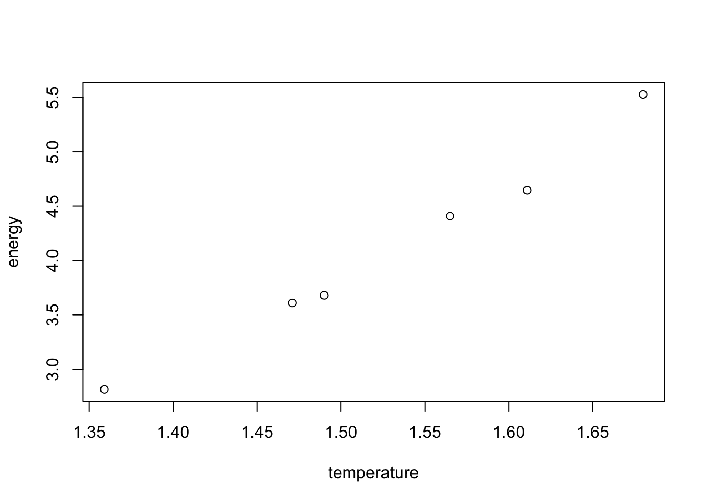
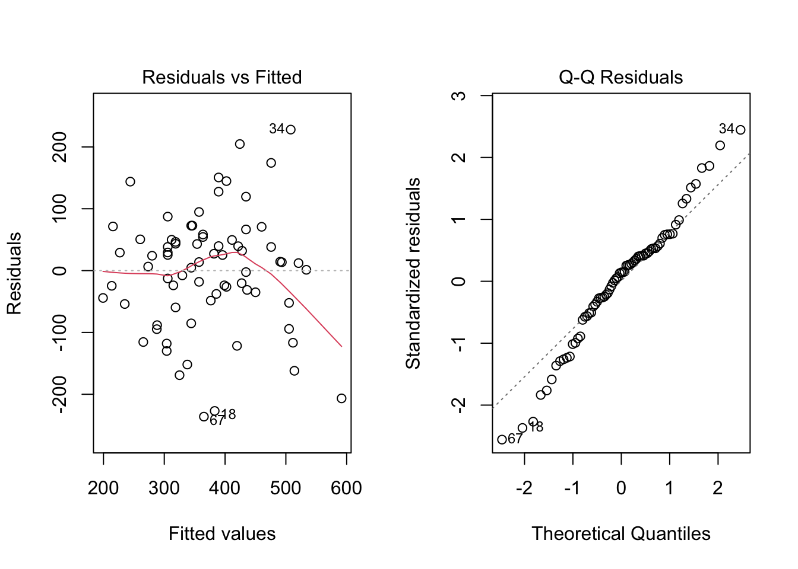
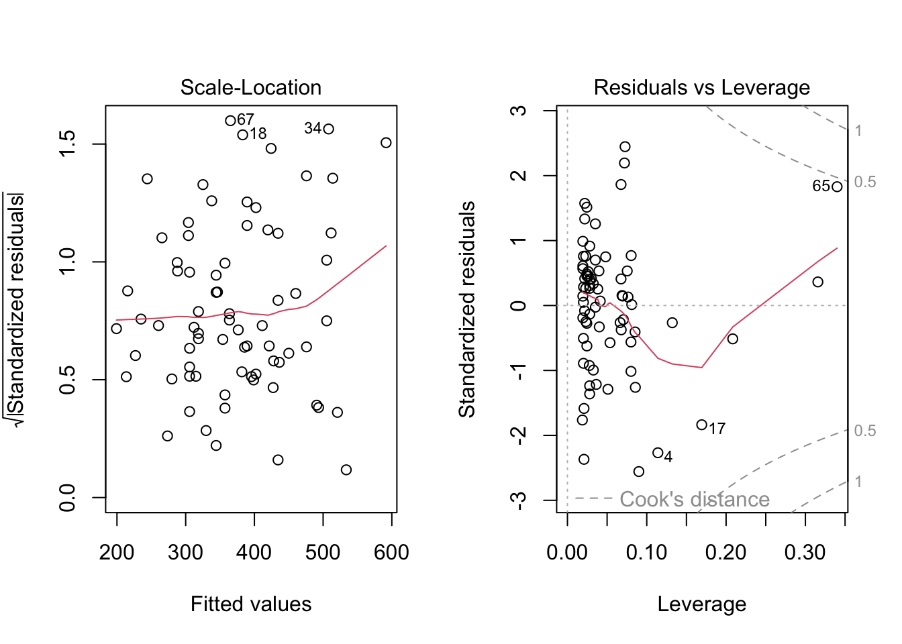

library(dplyr)
Attaching package: 'dplyr'The following objects are masked from 'package:stats':
filter, lagThe following objects are masked from 'package:base':
intersect, setdiff, setequal, unionlibrary(dplyr)
Attaching package: 'dplyr'The following objects are masked from 'package:stats':
filter, lagThe following objects are masked from 'package:base':
intersect, setdiff, setequal, unionlamp <- read.table("lamp.txt", header = TRUE)
with(lamp, plot(energy ~ temperature))
lamp.model <- lm(log(energy) ~ temperature, data = lamp)
summary(lamp.model)
Call:
lm(formula = log(energy) ~ temperature, data = lamp)
Residuals:
1 2 3 4 5 6
-0.004769 0.012439 -0.007643 0.018037 -0.024505 0.006442
Coefficients:
Estimate Std. Error t value Pr(>|t|)
(Intercept) -1.77103 0.10459 -16.93 7.13e-05 ***
temperature 2.06800 0.06824 30.31 7.06e-06 ***
---
Signif. codes: 0 '***' 0.001 '**' 0.01 '*' 0.05 '.' 0.1 ' ' 1
Residual standard error: 0.01734 on 4 degrees of freedom
Multiple R-squared: 0.9957, Adjusted R-squared: 0.9946
F-statistic: 918.5 on 1 and 4 DF, p-value: 7.061e-062.068 = estimate for O2 # #1 (2 points) Report the least-squares estimates of the parameters θ1 and θ2 for the lamp data. Show work or computer code.
θ1 = .171 θ2 = 2.066
model1 <- nls(energy ~ th1 * exp(th2 * temperature), data = lamp, start = list(th1 = 2.5, th2 = 2.068))
summary(model1)
Formula: energy ~ th1 * exp(th2 * temperature)
Parameters:
Estimate Std. Error t value Pr(>|t|)
th1 0.17075 0.02099 8.135 0.00124 **
th2 2.06582 0.07810 26.452 1.21e-05 ***
---
Signif. codes: 0 '***' 0.001 '**' 0.01 '*' 0.05 '.' 0.1 ' ' 1
Residual standard error: 0.077 on 4 degrees of freedom
Number of iterations to convergence: 3
Achieved convergence tolerance: 9.712e-09(1 point) Use your model fit from question 1 to predict the energy output of this lamp when the temperature is x = 1.4 (which corresponds to 1400 K). Show work or computer code.
3.084 energy per cm^2 per second
y_value <- .171 * exp(2.066 * 1.4) Using the model in equation 2, calculate an F-statistic and a corresponding p-value to test for differences among the seasons when comparing days with the same temperature, precipitation, and type of day. That is, in notation, test H0 : β4 = β5 = 0. Be sure to report both the F -statistic and the p-value, and be sure to give the associated df for the F-statistic. Show some work or computer code.
F-statistic = .213, p-value = .8086, DF = 2
trailuser <- read.table("trailuser.txt", header = TRUE, stringsAsFactors = TRUE)
trailuser$dayType <- as.factor(trailuser$dayType)
trailuser$season <- as.factor(trailuser$season)
contrasts(trailuser$dayType) weekend
weekday 0
weekend 1contrasts(trailuser$season) spring summer
fall 0 0
spring 1 0
summer 0 1additive_model <- lm(volume ~ avgtemp + precip + dayType + season, data = trailuser)
summary(additive_model)
Call:
lm(formula = volume ~ avgtemp + precip + dayType + season, data = trailuser)
Residuals:
Min 1Q Median 3Q Max
-238.22 -42.98 16.33 47.33 217.44
Coefficients:
Estimate Std. Error t value Pr(>|t|)
(Intercept) -28.186 83.261 -0.339 0.736027
avgtemp 6.923 1.796 3.855 0.000262 ***
precip -165.044 43.371 -3.805 0.000309 ***
dayTypeweekend 86.200 29.380 2.934 0.004579 **
seasonspring 10.551 40.845 0.258 0.796948
seasonsummer -11.404 63.647 -0.179 0.858336
---
Signif. codes: 0 '***' 0.001 '**' 0.01 '*' 0.05 '.' 0.1 ' ' 1
Residual standard error: 97.94 on 67 degrees of freedom
Multiple R-squared: 0.4573, Adjusted R-squared: 0.4168
F-statistic: 11.29 on 5 and 67 DF, p-value: 6.428e-08full_model <- lm(volume ~ avgtemp + precip + dayType + season, data = trailuser)
reduced_model <- lm(volume ~ avgtemp + precip + dayType, data = trailuser)
anova_results <- anova(reduced_model, full_model)
anova_results Analysis of Variance Table
Model 1: volume ~ avgtemp + precip + dayType
Model 2: volume ~ avgtemp + precip + dayType + season
Res.Df RSS Df Sum of Sq F Pr(>F)
1 69 646746
2 67 642657 2 4089.3 0.2132 0.8086(1 point) Choose the best interpretation of the outcome from your test in question 3.
A. There is mildly strong evidence that trail usage differs among the three seasons.
B. If we compare days with identical temperature, precipitation, and day type (that is, whether the day is a weekday or not), then there is mildly strong evidence that trail usage differs among the three seasons.
C. There is no evidence that trail usage differs among the three seasons.
D. If we compare days with identical temperature and precipitation, and day type (that is, whether the day is a weekday or not), then there is no evidence that trail usage differs among the three seasons.
Answer = D
(2 points) In the model in equation 3, provide a brief non-technical interpretation of why the estimated partial regression coefficient associated with the quadratic effect of avgtemp is negative. That is, what have we learned from the fact that βˆ < 0, and why does this make sense in the context of this particular data set?
While higher avgtemp initially leads to an increase in the number of trail users, there is a point in which further temperature increases result in decreased usage. This suggests that really high temperatures deter users.
par(mfrow = c(1, 2))
plot(reduced_model)

quadratic_model <- lm(volume ~ avgtemp + I(avgtemp^2) + precip + dayType, data = trailuser)
summary(quadratic_model)
Call:
lm(formula = volume ~ avgtemp + I(avgtemp^2) + precip + dayType,
data = trailuser)
Residuals:
Min 1Q Median 3Q Max
-246.463 -43.313 7.456 47.170 209.489
Coefficients:
Estimate Std. Error t value Pr(>|t|)
(Intercept) -599.94041 249.20172 -2.407 0.018784 *
avgtemp 27.81275 8.64793 3.216 0.001990 **
I(avgtemp^2) -0.18344 0.07369 -2.489 0.015248 *
precip -148.07875 41.43765 -3.574 0.000653 ***
dayTypeweekend 93.65017 27.43205 3.414 0.001083 **
---
Signif. codes: 0 '***' 0.001 '**' 0.01 '*' 0.05 '.' 0.1 ' ' 1
Residual standard error: 93.36 on 68 degrees of freedom
Multiple R-squared: 0.4995, Adjusted R-squared: 0.47
F-statistic: 16.96 on 4 and 68 DF, p-value: 1.086e-09Use the model in equation 3 to complete each of the statements below:
(a) (1 point) “When comparing two week-end days with the same temperature, a day on which it rains 0.25 inches will have an average of 37.02 fewer trail users than a day on which it doesn’t rain.”
b) (1 point) “When comparing two days with the same temperature and precipitation, a weekday will have an average of 93.65 fewer trail users than a weekend day.”
(1 point) Use the model in equation 3 to predict the trail usage on a weekday when the avgtemp = 55◦ F and the precip = 0.15 in. Show some work or computer code.
532.643
beta0 <- -599.94041
beta1 <- 27.81275
beta2 <- -0.18344
beta3 <- -148.07875
dayType_weekend <- 0
avgtemp <- 55
precip <- 0.15
predicted_volume <- beta0 +
(beta1 * avgtemp) +
(beta2 * (avgtemp^2)) +
(beta3 * precip) +
(dayType_weekend * 93.65017)
predicted_volume[1] 352.643(1 point) Use the model in equation 4 to predict the trail usage on a weekday when the avgtemp = 55◦ F and the precip = 0.15 in. Show some work or computer code.
314.292
trailuser2 <- trailuser |>
mutate(sqrt_precip = sqrt(precip))model4 <- lm(volume ~ avgtemp + I(avgtemp^2) + sqrt_precip + dayType, data = trailuser2)
sqrt_precip_value <- sqrt(0.15)
new_data <- data.frame(avgtemp = 55,
I.avgtemp.2 = 55^2, sqrt_precip = sqrt_precip_value, dayType = factor("weekday", levels = c("weekday", "weekend")))
predicted_usage <- predict(model4, newdata = new_data)
predicted_usage 1
314.2928 I would favor reporting model 4….
(1 point) Which of the following statements provides the best interpretation of the fact that β3 > 0? Choose the best answer. A. As BP increases, the slope of the association between Y and BMI increases. B. As BP increases, the slope of the association between Y and BMI decreases. C. BMI and BP are positively correlated. D. Both choices B and C are reasonable interpretations. E. None of the above are reasonable interpretations.
Answer = A
b) (2 points) Use the model to predict the response for someone who has a BMI of 25 and a blood pressure (BP) of 90.
139.35
intercept <- 66.45
beta_BMI <- -1.62
beta_BP <- -1.49
beta_interaction <- 0.11
BMI <- 25
BP <- 90
interaction_term <- BMI * BP
predicted_response <- intercept + (beta_BMI * BMI) + (beta_BP * BP) + (beta_interaction * interaction_term)
predicted_response[1] 139.35Using the conventional threshold for statistical signif- icance, there is statistically significant evidence that the association between BMI and the response depends on the value of BP.
SUPPORTED
The average value of the response is 66.45.
NOT SUPPORTED
The multiple regression model provides a significantly better fit than a model that includes only an intercept.
SUPPORTED
The multiple regression model explains roughly 40% of the variation in the response.
SUPPORTED